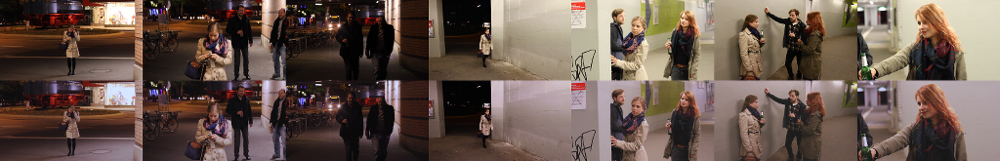

Gefahrengebiete[1]This is an allusion to Hamburg's so-called 'danger zones' of January 2014. is a german 12 minute short film that was created in the summer semester 2014 at the Camera Acting course of B.Sc. Media Systems (B-MS). The planning for the project started with the course Artistic Design 2 in winter semester 2013/14.
The movie was planned, written, shooted, edited and staged (together with an exhibition on 2014-07-05) by approximately 40 to 50 Media Systems students, assisted by seven academics and tutors. Four actors were casted gratuitously. A cooperation was established with the Fashion, Costume & Textile Product Design degree program at the Department Design, which manufactured the actors' costumes.
Production manager: Christoph Mennerich
Screenwriter: Tanja Blücher and Janina Kozubik
Film director: Nico Rößel and Simon Pontius
Leading actors: Arikia Orban, Hannah Goossens, Martin Geisen and Aramis Scherer
I was the leader of the video post-production team, consisting of three people (including me). In this function I communicated with the film director and the audio post-production, created preparative exercises for my team, cutted and edited the scenes 1 and 2 (of 5) and synchronized them with the audio, generated the title strip and the end credits, and finalized the movie as a whole.
The film can't be published online at this time, because of missing rights of use for the music [2]We sadly don't have a fair use copyright exception in germany.. Authenticated users of this website can download the movie in low quality (H.264, 480x270 pixels, 25 FPS, 48 kHz audio) as an MP4-File (234 MiB).
| Technologies | H.264, 1080p, Color Grading |
|---|---|
| Tools | Blender, Avidemux, VirtualDub, Audacity, Auphonic, GIMP, Trello |
| Participants | 3 (50+ total) |

{kind=link}
{kind=link}